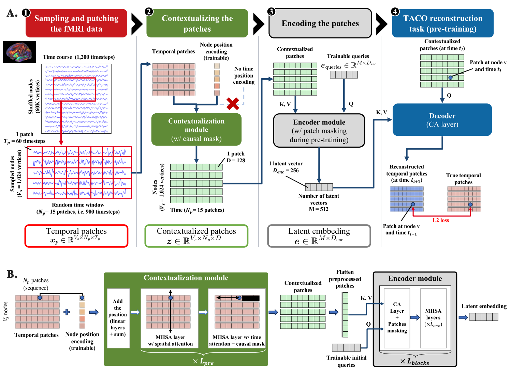

Decoders and pretraining objectives¶
The decoders (paper module D) are the pretraining heads. They read the latent embedding and predict patches of the signal; the loss compares each prediction with the true patch. A decoder does not reconstruct a whole recording: it predicts one patch at a time, chosen by a query. Like the encoder, a decoder is a Perceiver IO cross-attention layer (Jaegle et al., 2022).
Two objectives are used in the paper: the vanilla patch reconstruction task, and the TACO reconstruction task. The first predicts a masked patch from its position in the recording; the second predicts the next patch of a channel from the contextualized patches. The rest of this page focuses on TACO, the objective of the paper. TACO does not use a predefined time-position embedding (sinusoidal, rotary or other): such an embedding imposes a prior on the temporal structure, which can hurt the capture of the dynamics. The objective lets the model infer the temporal relations from the data.
TACO: Time-Aware Conditional reconstruction¶
The paper's objective is TACO. For a node v and a patch time i, the query is the contextualised patch z of the
previous time step, and the decoder predicts the patch x at time i, conditioned on the latents e:
x_hat(v, i) = CA(query = z(v, i-1), key/value = e) loss = MSE(x_hat, x) over all nodes and patch times
The figure below shows the task as the paper draws it: the contextualised patch at time t_i queries the latents and predicts the patch at t_(i+1) (paper, architecture figure, panel A, stage 4).

Because the query is a contextualised patch, the prediction can use the global context of the contextualizer and the
latents, but not the patch it predicts, which the causal mask of the contextualizer keeps from the query. In the code
this is the objective forecasting_1: the query is a contextualised patch and the target is the patch k steps later.
TACO therefore needs no explicit time-position encoding. The paper's ablations show this matters: adding sinusoidal time
encodings lowers the representation quality.
How a decoder works¶
A decoder is a cross-attention layer: its queries attend to the latents, and the result is projected to one patch of
patch_length samples. The objectives differ only in what the queries and targets are:
- Forecasting (
forecasting_<k>; TACO isforecasting_1): query = contextualised patch, target = the patchksteps later in the same channel. - Reconstruction (
reconstruction): query = the position embeddings of the target patch, target = its raw signal. The paper uses this objective with time-position encodings as an ablation (configuration 1); it is not the default.
The loss is the mean squared error between predicted and target patches, weighted by loss_weight. Several decoders
can be combined, with one DecoderConfig each.
Options¶
| Option | Default | Experiments | Effect |
|---|---|---|---|
objective |
"forecasting_1" |
TACO | "forecasting_<k>" for k >= 1, or "reconstruction". |
loss_weight |
1.0 | 1.0 | Weight of this objective in the total loss. |
num_heads |
1 | 1 | Attention heads of the cross-attention (single head in the paper). |
widening_factor |
1 | 1 | MLP widening of the cross-attention layer. |
dropout |
0.1 | 0.1 | Dropout in the decoder. |
Reference¶
timber.modules.decoder ¶
Cross-attention decoders (paper module D) and the queries/targets of the pretraining objectives.
A decoder query cross-attends to the encoder latents and is projected to a patch
of patch_length samples. The objectives differ only by their queries:
- Forecasting (
forecasting_<k>, TACO fork = 1): the query is a contextualised patch and the target is the patchksteps later (plus the overlap offset of overlapping patches). With a causal contextualizer the query only carries information from the past. - Reconstruction: the queries are the position embeddings of the masked patches and the targets are their raw signal.
CrossAttentionDecoder ¶
Bases: Module
Decode queries from the latents: cross-attention + MLP, then a linear projection.
Parameters:
| Name | Type | Description | Default |
|---|---|---|---|
query_dim
|
int
|
Channels of the queries. |
required |
latent_dim
|
int
|
Channels of the encoder latents. |
required |
output_dim
|
int
|
Channels of the prediction ( |
required |
num_heads
|
int
|
Cross-attention heads. |
1
|
widening_factor
|
int
|
MLP widening of the cross-attention layer. |
1
|
dropout
|
float
|
Dropout on the attention probabilities. |
0.0
|
forward ¶
forward(
queries: Tensor,
latents: Tensor,
need_weights: bool = False,
) -> tuple[torch.Tensor, torch.Tensor | None]
queries (batch, query, query_dim), latents (batch, latent, latent_dim).
Returns (batch, query, output_dim).
parse_forecast_horizon ¶
parse_forecast_horizon(objective: str) -> int
"forecasting_<k>" -> k (must be a positive integer).
forecasting_queries ¶
forecasting_queries(
contextualized: Tensor, shift: int
) -> torch.Tensor
Queries of a forecasting decoder: every patch that has a target shift patches later.
Parameters:
| Name | Type | Description | Default |
|---|---|---|---|
contextualized
|
Tensor
|
|
required |
shift
|
int
|
Patches between a query and its target ( |
required |
Returns:
| Type | Description |
|---|---|
Tensor
|
|
forecasting_targets ¶
forecasting_targets(
patches: Tensor, shift: int
) -> torch.Tensor
Targets matching forecasting_queries.
(batch, channel, patch, length) -> (batch, channel * (patch - shift), length).
reconstruction_queries ¶
reconstruction_queries(
position_embeddings: Tensor, masked_indices: Tensor
) -> torch.Tensor
Queries of the reconstruction decoder: position embeddings of the masked patches.
Parameters:
| Name | Type | Description | Default |
|---|---|---|---|
position_embeddings
|
Tensor
|
|
required |
masked_indices
|
Tensor
|
|
required |
Returns:
| Type | Description |
|---|---|
Tensor
|
|
reconstruction_targets ¶
reconstruction_targets(
patches: Tensor, masked_indices: Tensor
) -> torch.Tensor
Raw signal of the masked patches: (batch, channel, patch, length) -> (batch, num_masked, length).